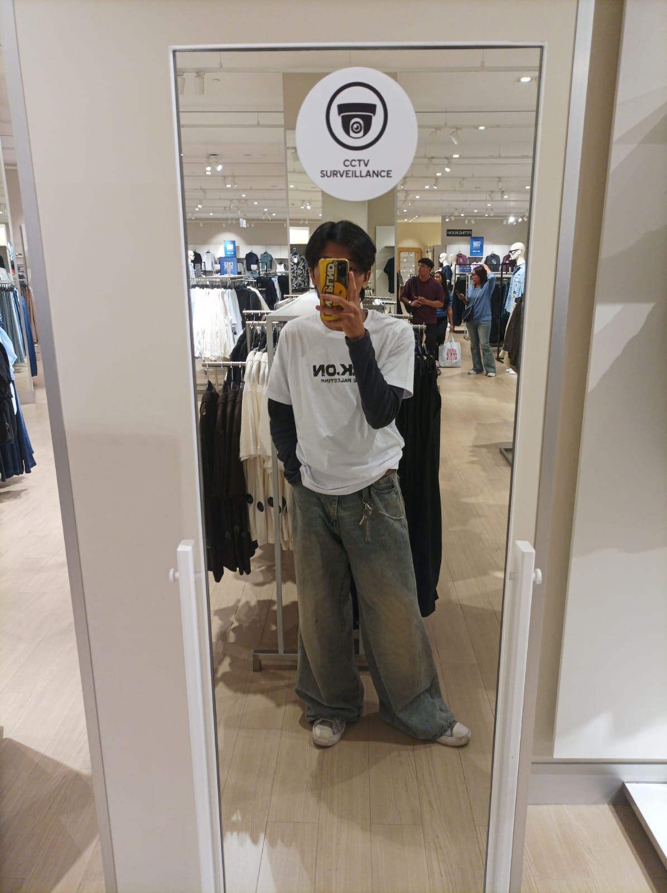

Tentang Saya
Robby Putra
Yahya Wicaksana

Mahasiswa Desain Komunikasi Visual D3
Universitas Negeri Semarang · 2024
Saya adalah mahasiswa Desain Komunikasi Visual D3 di Fakultas Bahasa dan Seni, Universitas Negeri Semarang, angkatan 2024.
Ketertarikan saya ada pada eksplorasi tipografi, komunikasi visual, dan bagaimana sebuah desain bisa menjadi solusi nyata. Bagi saya, desain bukan sekadar membuat sesuatu terlihat bagus tapi memastikan pesan tersampaikan dengan tepat.
Di luar kuliah, saya aktif mengerjakan proyek-proyek personal dan terbuka untuk kolaborasi kreatif.
Keahlian
Adobe Photoshop
Adobe Illustrator
CorelDRAW
Figma
Affinity
Lihat Portfolio →